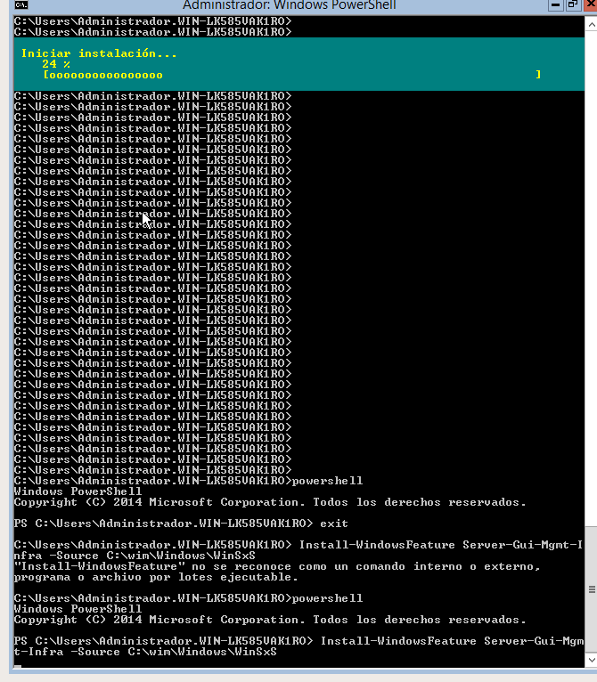

Instalació de característiques i configuració de dominis en Windows
Instal·lar un servidor Windows Server 2012 sense GUI amb mode Core:
2.1 Modificar el nom del servidor:
-Al executar la comanda sconfig s'ens obrirà aquest "menu" de terminal on tindrem moltes opcions...a nosaltres ara ens interesa la 2 per tal de canviar el nom al servidor. Elegim la opció 2, i posem el nom que vulguem.
2.2 Posar una IP fixa:
-Dins del mateix menú eligirem la opció 8. El programa ens demanará elegir l'adaptador de xarxa que volem usar...
-...i una vegada dins ens portará un submenú. Ens interessa la primera opció per tal de canviar la IP. Al submenú del submenú (...) tornarem a elegir la primera opció, per finalment si poder canviar la ip. Ens demanra les seguents coses:
-Adreça IP, Màscara de subxarxa i Porta d'enllaç
2.3 Desactivar les actualitzacions.
-Opció 5. Una vegada elegida tindrem que elegir entre actualitzacions automatiques (A) o manuals (M). Nosaltres, per a no tindreles automàtiques, les posarem en manual.

2.4 Comprovar que la zona horária sigui la correcta
-Opció 9 del menú del sconfig. Una vegada elegit s'obrirà la finestra normal de windows per tal de poder configurar l'hora. Simpelement posem que sigui l'hora pertanyent a Madrid i ja está.
Treure la interfície Shell de la màquina amb GUI.
Pasos previs
-Al iniciar el Windows Server 2012 sempre s'obri aquest "Panel de administración" del servidor. Per tal de treure la interficie, anem al menú de "Administrar" i allí dins a "Asistente para quitar roles y características. Anem pasant els menús fins que arribem a "Características". Allí busquem la casella de "Shell gráfico de servidor" i la desmarquem.
-Passem pantalles fins arribar a la confirmació. Aqui ens sortirán totes les opcions que hem elegit (només ens tindria que sortir la del Shell). Marquem la casella de que es reinici automaticament si ho necessita, i avant.

-I ara, una vegada aplicat tot i reiniciada la màquina, quan s'inici Windows només ens apareixera la CMD i la pantalla de administració propia del Windows Server 2012..res més.
Procés d'eliminació de la interficie:
-Afegim la .ISO del propi windows server a la MV.

-Executem el powershell. Creem un nou directori amb mkdir. Assignem la nostra versió amb dism /get-wiminfo /wimfile:d:\sources\install.wim
-Muntem al directori creat: dism /mount-wim /wimfile:d:\sources\install.wim /index:2 /mountdir:c:\wim /readonly
-Instal·lem amb: Install-WindowsFeature Server-Gui-Mgmt-Infra –Source C:\wim \Windows\WinSxS

-I una vegada a acabat apaguem amb el shutdown -r -t 0